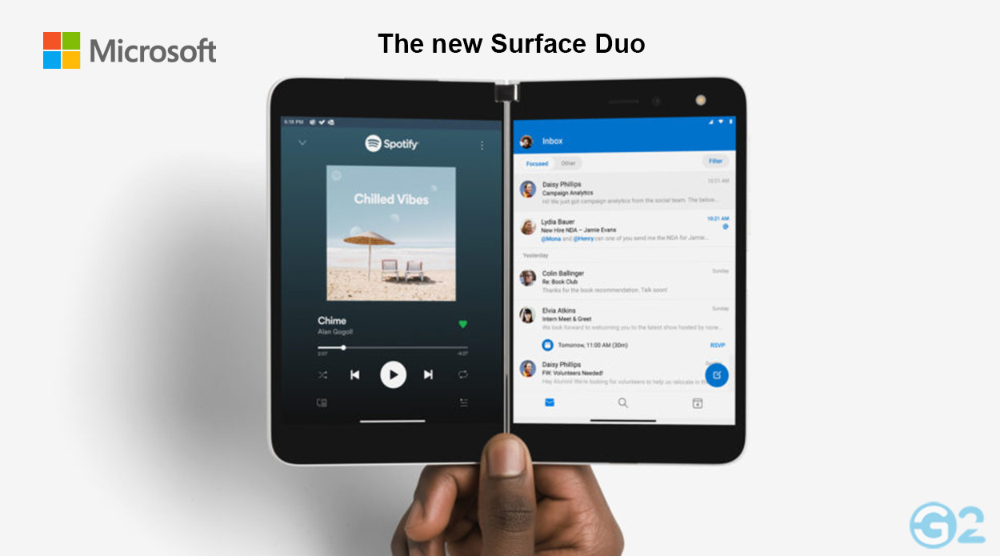

Microsoft Surface Duo 2 Review: The Best Microsoft Surface
The Surface Duo 2 is much better than the original Surface Duo, and is incredibly close to being a solid, finished product. However, some slight UI bugs do crop up occasionally and only having 8GB of RAM is an odd decision for a device centered so much around productivity. Still, it’s the only device like it, so if you’re into the idea, it’s probably for you.
Section 1: What is the Microsoft Surface Duo 2?
The Microsoft Surface Duo 2 is the successor to the original Microsoft Surface Duo, a 2-in-1 hybrid which was released in May of 2016.
The original Surface Duo is a very interesting device because it exists in an odd space: it’s a 10.8″ Windows 10 tablet which also can be used as a Bluetooth
keyboard, a pointing stick, and a touchpad. At it’s simplest, you can toss the entire device in your bag and use it as a laptop (it would work just as well for some)
and it would also let you write on the touchscreen. It’s a really nifty device.
Microsoft Surface Duo 2 Review: Who Is It For?
The Surface Duo 2 is for anyone who enjoys 2-in-1s, especially because it’s the only 2-in-1 device out there that’s this well-rounded. If you like to use a tablet as a laptop, then the Surface Duo is it for you.
Design:
This is where the Surface Duo 2 is really set apart from Microsoft’s first Surface tablet. While the Surface Pro 3 can be a little “sticky” to type on, especially
if the laptop portion is feeling especially soft or pliable, the Surface Duo 2 feels as smooth as a glossy piece of glass. The keyboard is good, offering slightly
more travel than the Surface Pro 3’s, although the fact that it’s really just a slightly raised but smooth surface makes it not as annoying to type on as the
full-sized keyboard on the Surface Pro 3. The trackpad is also a great option for people who frequently multi-task and are looking for a decent experience, especially
when compared to the Surface Pro 3’s trackpad.
The display is good, but not as good as its predecessor.
As the biggest factory in the world in Fremont, California, Tesla is one of the most valuable companies in the world. In 2016, the company posted $7.47 billion in revenue and lost $2.96 billion.
Hardware specs:
1. 11″ Full HD Touch-Type Display

The 11″ screen (15:10) has been improved over its smaller sibling, a lot. Brightness and color saturation are significantly higher, and some interesting stuff has
been done to the LCD technology used in the screen. Most notably, the LCD panel is an anti-glare display, meaning reflections aren’t as pronounced as they are on
most glossy displays.
The screen is also powered by a Core M3 processor. Because this is basically a tablet, it doesn’t have an integrated GPU, so the chip in the Duo is relatively small.
The unit we used to review the Surface Duo 2 is powered by an Intel HD 520 GPU, which should make games and other things with a GPU lag-free.
The device also includes Intel HD 515 graphics.
Display:
The Surface Duo 2 has a 10.8-inch Full HD (1920×1080) display that is still quite sharp. However, I’ve found the panel to be slightly too reflective for my liking. When I put the Surface in a room with a lot of windows, I’ve found it gets blotchy and grainy — which isn’t very attractive. On the plus side, the colors are accurate and accurate, and the contrast ratio is great.
Keyboard and touchpad:
In a show of the Surface’s progress, it’s the touchpad that proves the most innovative. The touchpad isn’t just larger than before, the surface on which it rests is coated with haptic feedback to enhance its performance in the touch context. Touch typing is virtually impossible on a touchpad, especially if you have large hands. The Surface Duo 2 has made a welcome change by making the touchpad louder, creating an audible feedback sensation as your fingers tap the pad, which I always find helpful. However, it’s not without its flaws. The touchpad sits next to the keyboard, so not having a bit of separation between the two is unusual.
Cameras:
The Surface Duo 2 is the second-generation Surface to feature a front-facing camera. We’ve already said how disappointed we are with the quality of the camera on the
original Surface Duo, and it’s not much better on the Duo 2. The 5MP sensor is particularly bad as it produces blurry, soft, and far-off images in low light.
The rear-facing camera, however, is a full 12MP affair, and while it’s also quite bad, it’s not so bad as to be unusable by any means. Still, it should be better
than the last generation.

The rear-facing camera, however, is a full 12MP affair, and while it’s also quite bad, it’s not so bad as to be unusable by any means. Still, it should be better
than the last generation. For video calls, Skype for Business is pretty much flawless. It’s the best video call service on the market for business, and a Microsoft exclusive to boot.
Preliminary Verdict:
The Surface Duo 2 offers a significant increase in hardware and a greater focus on the needs of business users. With a significantly higher quality of build than
its predecessor, as well as a host of new hardware, Microsoft is pushing the Surface Pro line into the highly competitive consumer market. The Surface Pro 2 provides
a much more rounded experience for enthusiasts, and if the only problem you have with the Surface Pro 2 is the poor camera quality and relatively small size, then
the Duo 2 may well be for you.
There are some trade-offs between the Duo 2 and the Pro 2, but for the most part these are minor, and the positives of the Surface Duo 2 make up for these issues.